TGJ3M · Assignment 4
Journeys Through Places
This collection follows the places I noticed while travelling: Toronto’s skyline and streets, and the historic buildings and gardens of Beijing. I used composition and editing to guide attention and bring out the mood of each scene.
01 · A City Across the Water
Composition: Rule of thirds
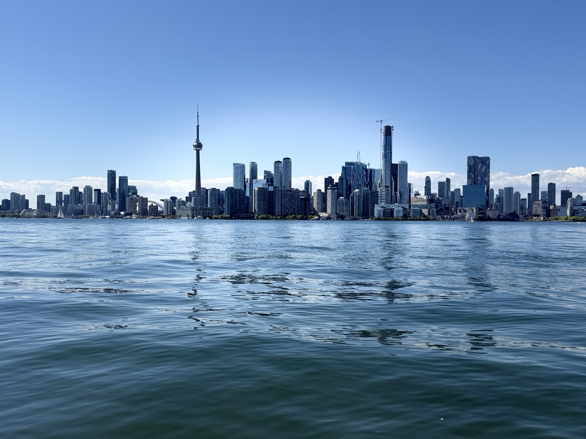
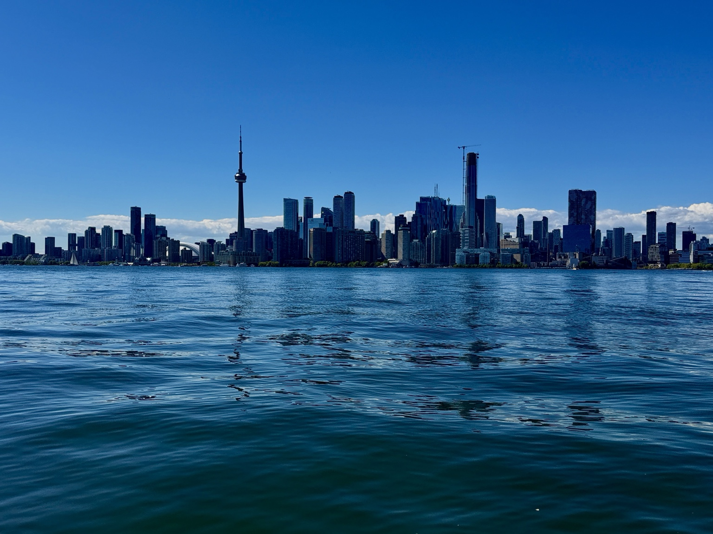
I placed the skyline near the upper third and left the water in the foreground. This gives the CN Tower and buildings room to stand out while showing where the city meets the lake. I increased contrast and cool blue tones in the edit to make the skyline and reflections clearer. The wide view introduces the places in my collection.
02 · The Road Ahead
Composition: Leading lines
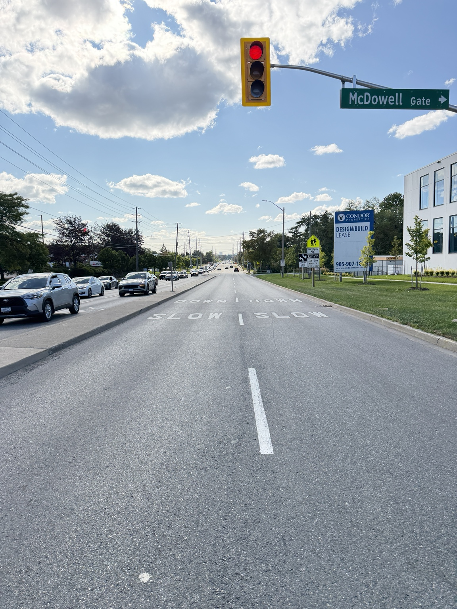
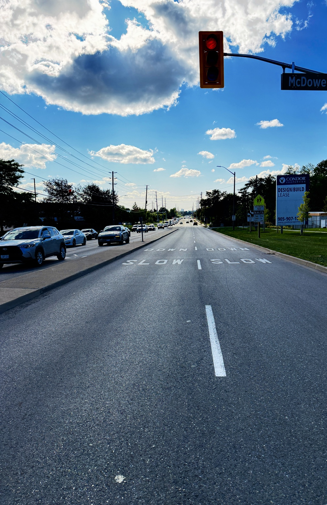
The lane markings and edges of the road lead the viewer toward the distant traffic and horizon. I increased contrast and deepened the blue sky in the edit, making the road and clouds more dramatic. The lines make this photograph feel like a journey through an everyday place.
03 · The Palace Courtyard
Composition: Balance
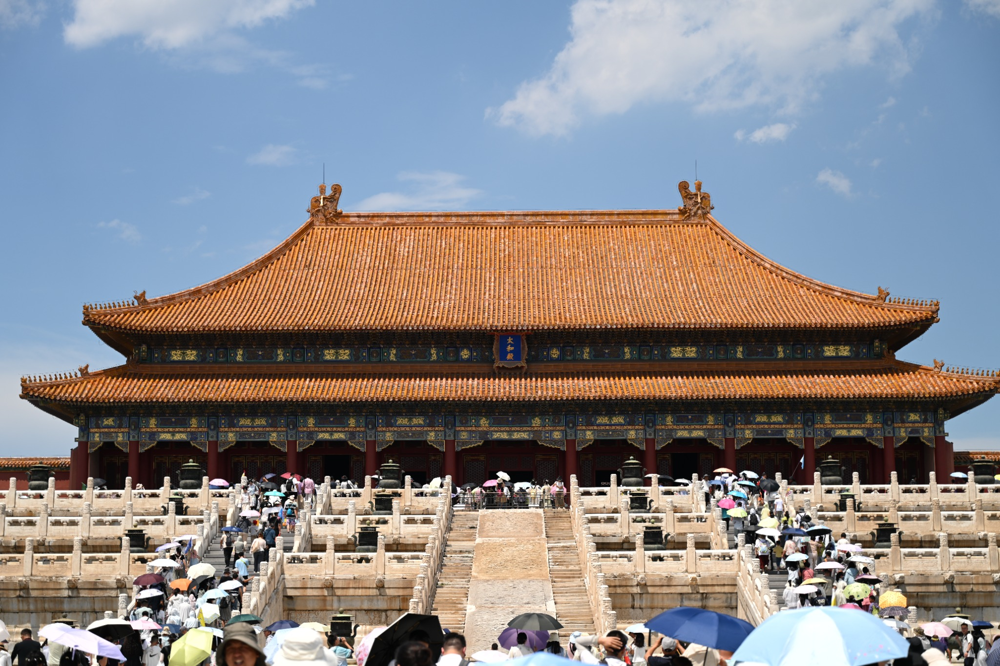
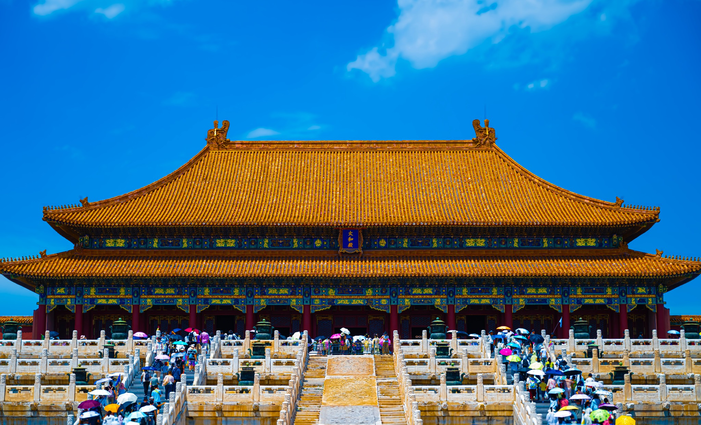
The palace is centred, and its roof and stairs spread evenly across the frame. This balanced arrangement makes the building feel grand and steady. I strengthened the colour and contrast in the edit so the golden roof and blue sky stand out. The formal composition suits this historic place.
04 · A View Through the Trees
Composition: Framing
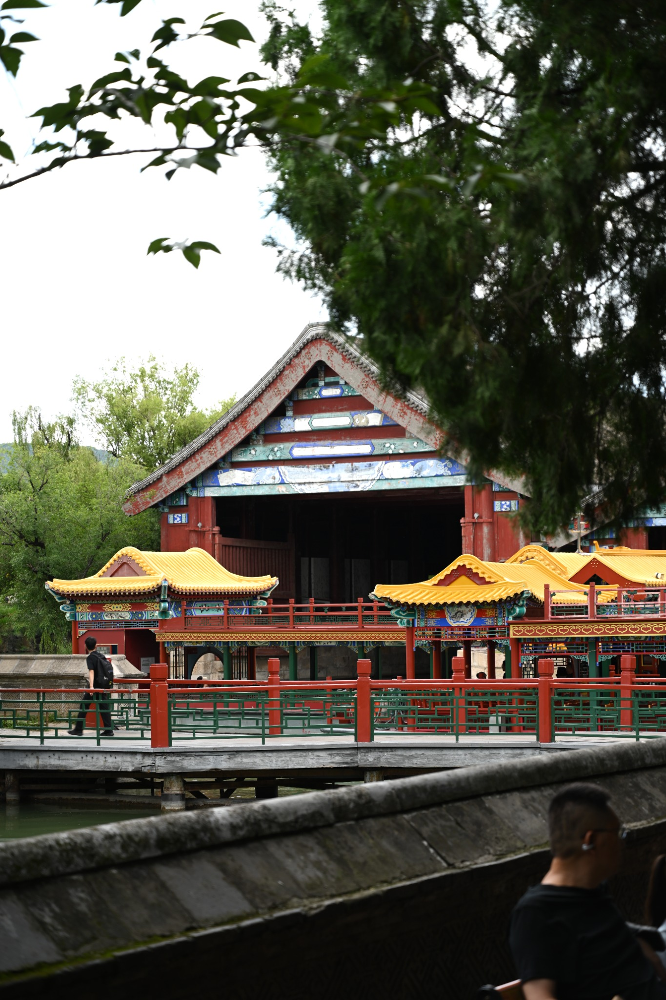
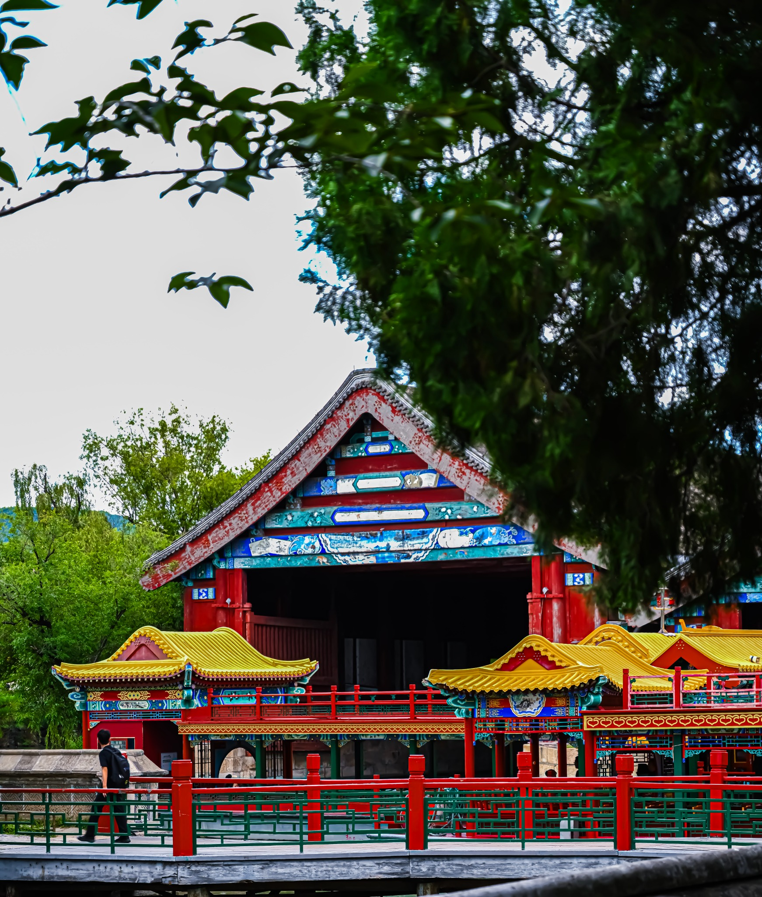
The branches around the top and sides act like a natural frame around the pavilion. They guide the viewer toward the roof and colourful details. I increased saturation and contrast in the edit to separate the bright building from the darker leaves. The framing makes the scene feel like a view discovered while exploring.
05 · Evening Light
Composition: Contrast
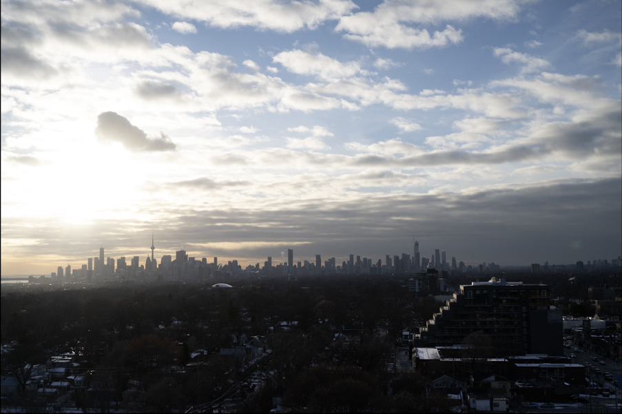
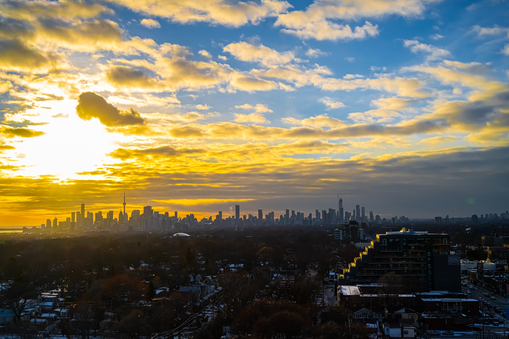
The bright sunset contrasts with the darker city below, so the viewer notices the sky first and then the skyline. I increased contrast and warm colour in the edit to make the clouds more vivid while keeping the buildings as a dark silhouette. This change emphasizes the calm evening mood.
06 · Colour at the Water’s Edge
Composition: Colour
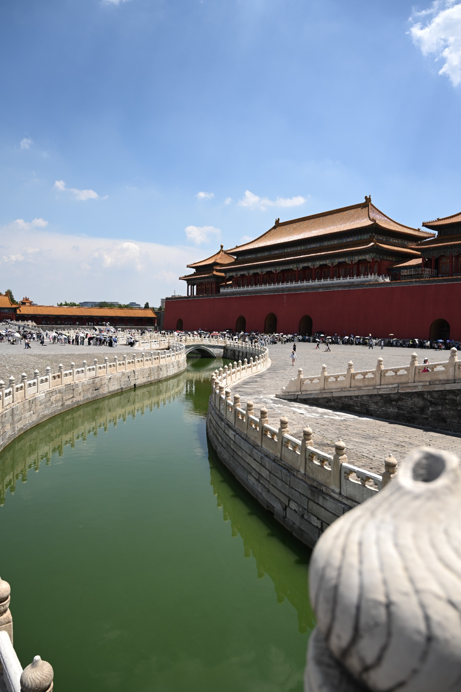
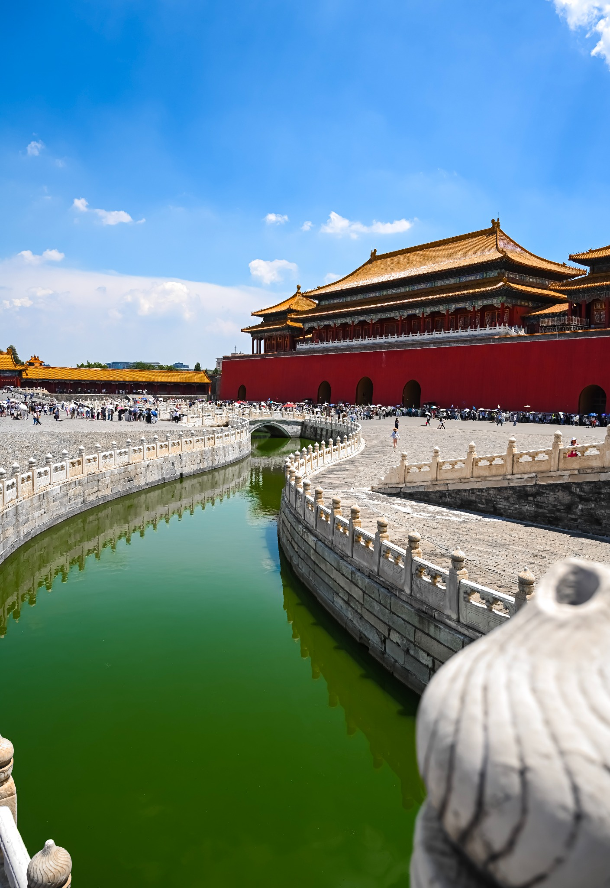
The green water contrasts with the red walls and golden roof, creating a strong colour combination. I increased saturation and contrast to make these colours more noticeable. The curved stone edge also leads the viewer toward the palace. The edit supports the collection’s focus on memorable places.
Reflection
My strongest photograph is the road because the lane markings pull my eyes toward the distance and make the scene feel like a journey. Editing improved it by adding contrast and bringing out the blue sky, so the road and clouds are easier to notice. If I completed the assignment again, I would take another version with a little more space around the traffic light and street sign. That would keep the edges of the scene from feeling tight. I learned that small choices in framing, colour and light can change what a viewer notices first.